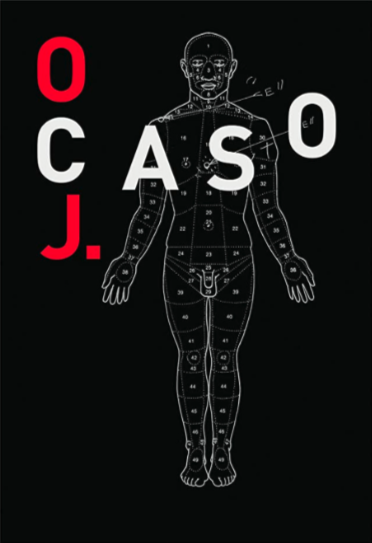
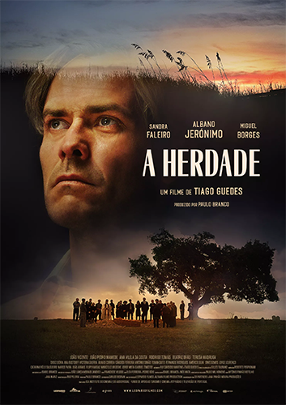
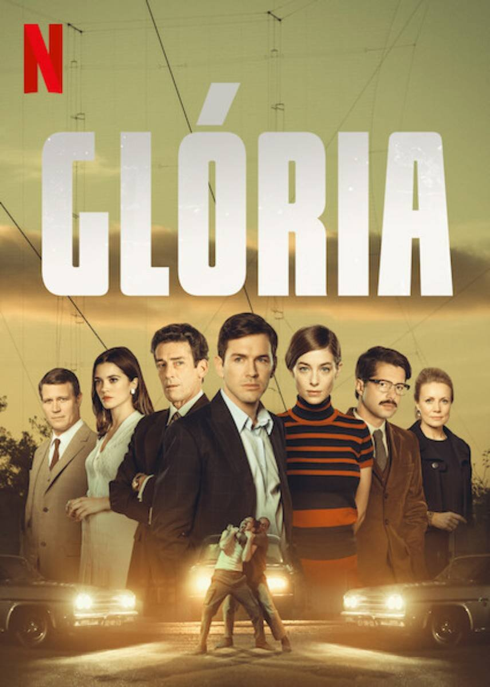
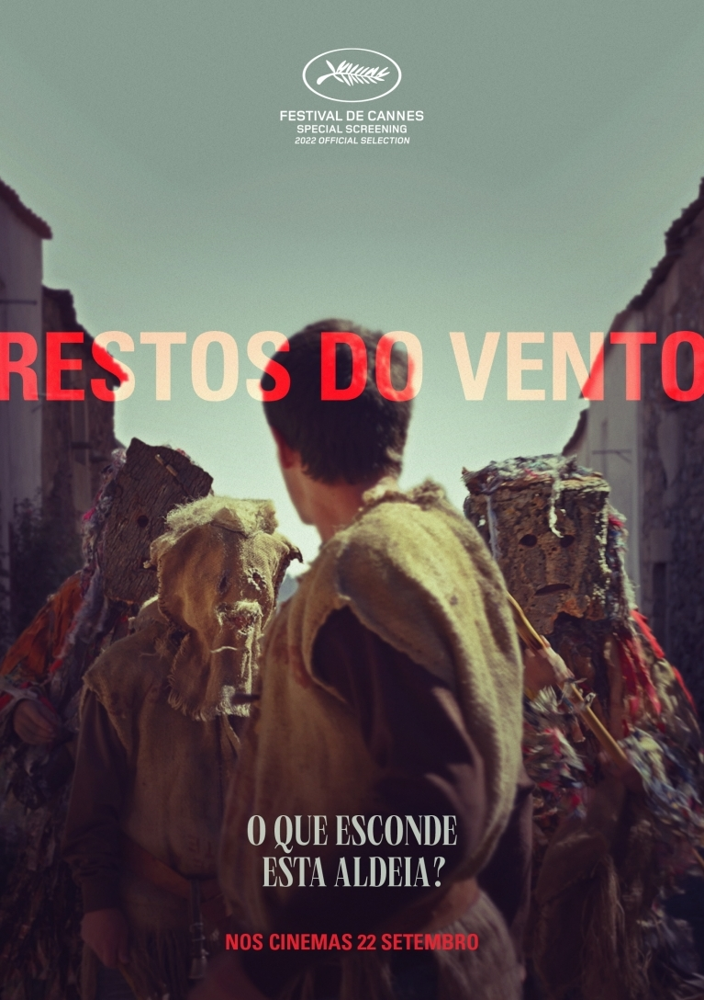
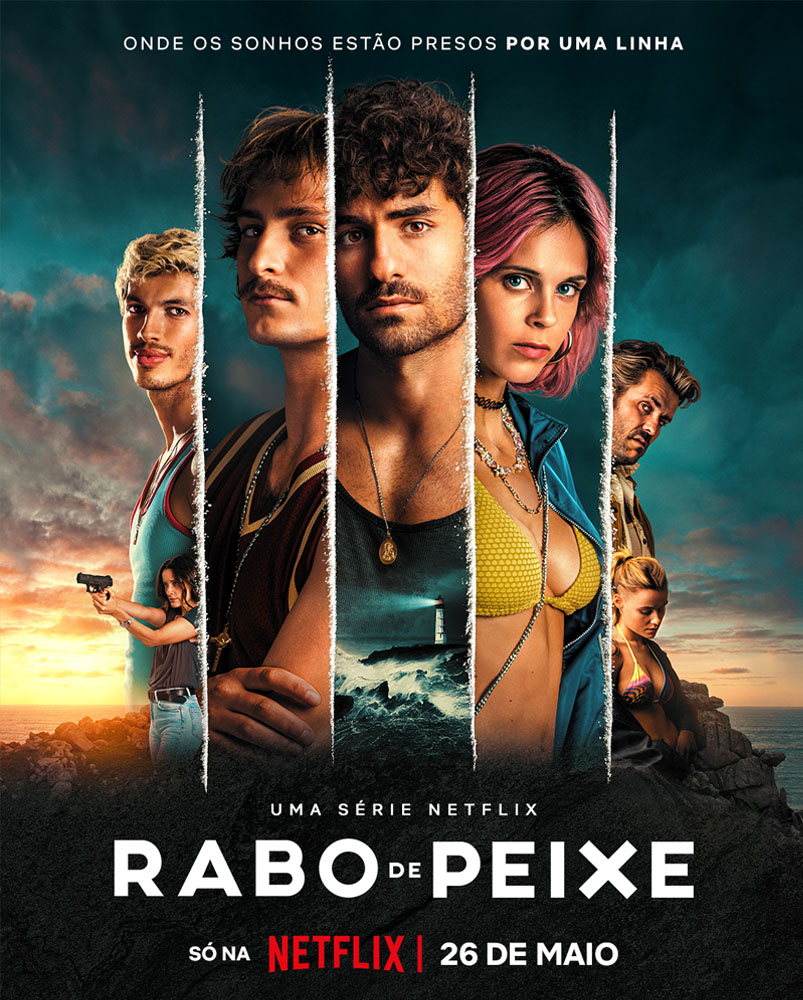

work
| script supervisor
-

O Caso J
Um tribunal é um teatro e a morte pode ser uma montagem. Dois polícias são acusados do extermínio injustificado de J. por um tribunal criminal. A mãe de J. é interrogada pelo advogado de defesa dos polícias, para assim esclarecer quem era o seu filho: qual era a sua profissão? Onde trabalhava? Junto ao seu corpo, foi encontrada droga e uma pistola.
-

A Herdade
O retrato da vida histórica, política, social e financeira de Portugal, dos anos 40, atravessando a Revolução do 25 de Abril e até aos dias de hoje.
-

Glória
Em 1968, Glória do Ribatejo fervilha de espiões, mentiras e segredos. João Vidal, engenheiro na Rádio Europa Livre, joga em todas as frentes da Guerra Fria em Portugal.
-

Restos do Vento
Um ritual de passagem numa aldeia do interior de Portugal deixa marcas profundas num grupo de adolescentes. Vinte e cinco anos depois, o passado ressurge como uma bomba ao retardador, e a tragédia instala-se.
-

Rabo de Peixe
Um barco repleto de cocaína afunda na ilha onde Eduardo nasceu, e ele vê ali uma oportunidade arriscada de ganhar dinheiro e realizar sonhos impossíveis.
-

Diálogos Depois do Fim
Diálogos escritos por Pavese, eloquentes e ao mesmo tempo sentenciosos e frágeis, mas inverossímeis, entre deuses humanizados, semi-deuses, heróis e outras figuras pagãs da mitologia grega, que questionam, através do imaginário dos mitos gregos, a sociedade do homem contemporâneo. Fora de um dado tempo e espaço, e portanto, como os mitos, sempre actuais.